Иконка Herself
28.09.2026: три ранние заглушки сравнили с тремя знаками в утверждённой системе Oxblood Editorial. Выбран H1 — «h» и линия голоса. В загруженной ранее сборке 1.0 (1) остаётся B; H1 уже стоит в проекте и войдёт в следующую сборку.
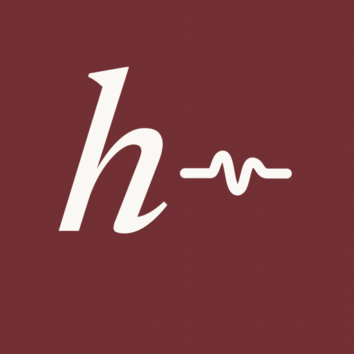
Почему H1
- Бордо #7B1E2B и бумажный знак #FBF8F3 совпадают с утверждённой палитрой D9.
- Буква набрана Newsreader Medium Italic — шрифтом продукта D10. Линия сообщает о голосе без изображения лица.
- Крупный силуэт и короткая волна различимы в 60, 40 и 29 px. Нет свечения и градиента прежней B.
В контексте выдачи
Одинаковый размер 60 px. Соседи взяты из исследования конкурентов проекта; это сравнение формы и цвета, не реальная позиция в App Store.
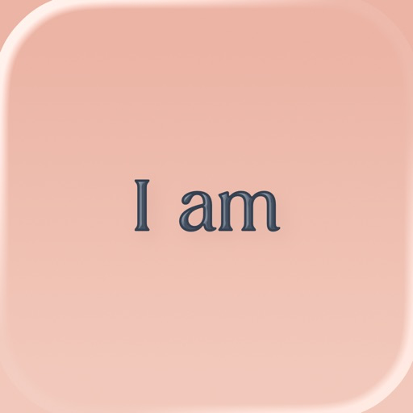
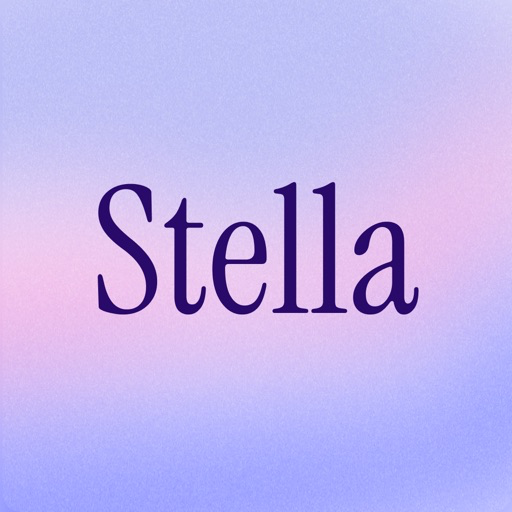
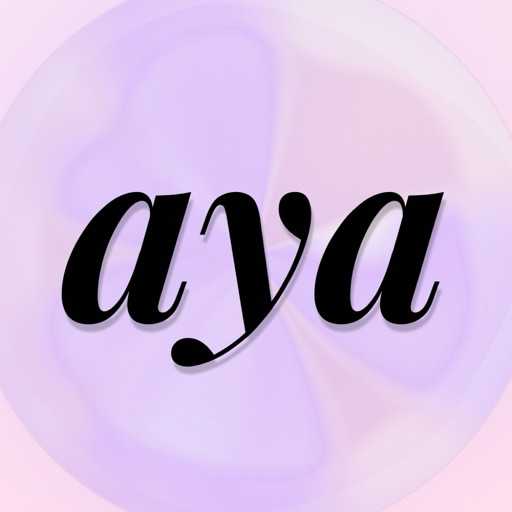
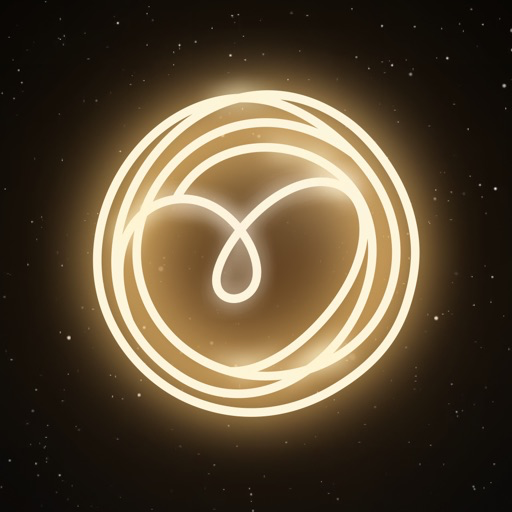
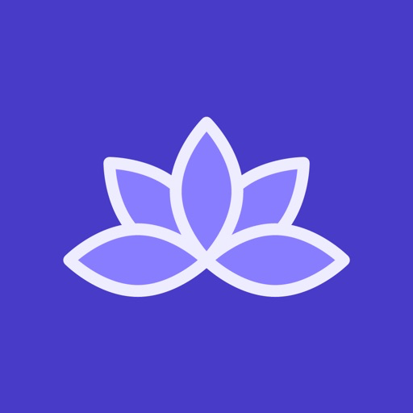
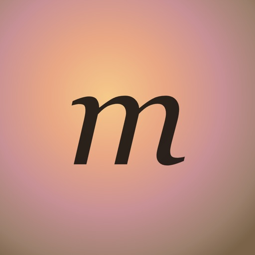
Раунд 1 · ранние варианты
A читалась яснее других, но напоминала голосового помощника. B привлекала внимание, но расходилась с новой системой. У C две фигуры терялись в мелком размере.
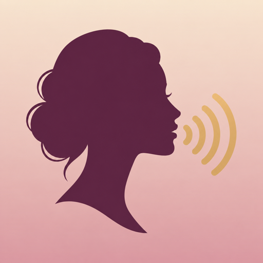
A · профиль и дуги
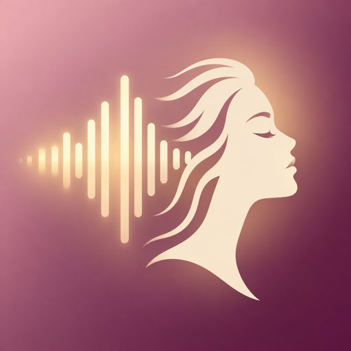
B · светящийся профиль
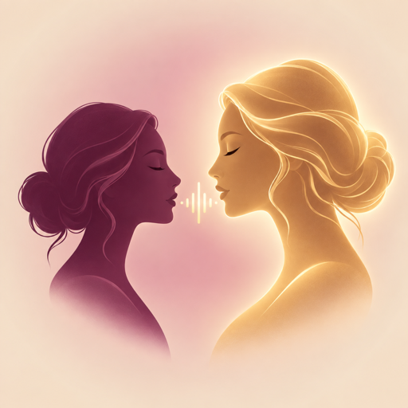
C · два профиля
Раунд 2 · Oxblood Editorial
Три варианта используют одинаковые цвет, шрифт и масштаб. У H2 линия опущена слишком низко. H3 яснее говорит об аудио, но ближе к общему знаку плеера. H1 лучше соединяет фирменную букву с голосом.
H1 · буква и линия голоса победитель
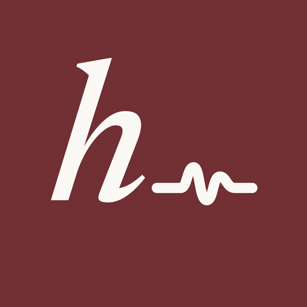
H2 · низкая линия
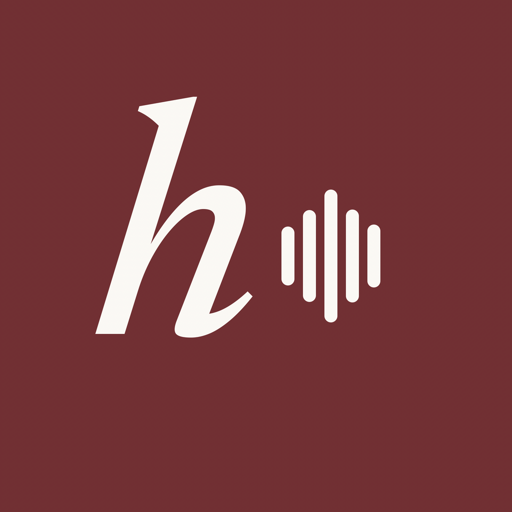
H3 · голосовые столбики
Как выбирали
Проверили соответствие D9/D10, различимость в 60/40/29 px и соседство с шестью иконками ниши. Это редакционная визуальная оценка, без живого опроса и количественного A/B теста. Jev не применяли: его текстовый вход не показывает сами картинки. Линия H1 может напомнить пульс; узнаваемость и конверсию проверим после релиза.
Сменные иконки
Сейчас в приложении одна иконка H1. Если пользователи попросят выбор, добавим его в Settings › Appearance › App icon, как у Two Sparrows: основная, тёмная и светлая версии одного знака. Сначала проверим запрос, затем подготовим ассеты и проверим переключение на устройстве.
Исходники: research/icon-2026-09-28/ и assets/icon-candidates/. Размеры на странице не заменяют проверку установленного приложения.